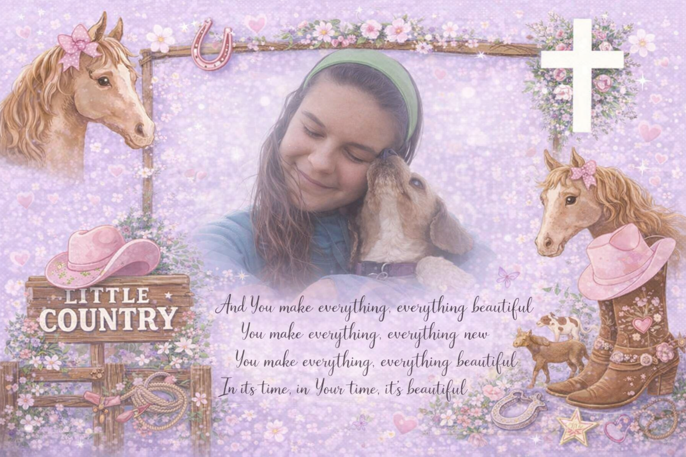

Sharing my heart, my faith, and God’s amazing creation!
Hi! I’m Talitha Faith Allison, but most folks call me Tali—short, sweet, and easy to holler across a pasture 🤠. I was born on March 1, 2003, and I’m just a country girl with muddy boots, big dreams, and a heart that belongs to Jesus.
The Bible is the most important thing in my life. It’s where I learn who God is, who I am, and how to live each day. Psalm 119:105 says, “Your word is a lamp to my feet and a light to my path,” and I try to follow that light in everything I do.
I spend time reading, memorizing, and thinking about Scripture, because Joshua 1:8 says to meditate on God’s Word day and night. 2 Timothy 3:16 teaches that all Scripture is God-breathed and useful for teaching and guiding us, and I truly believe the Bible is God speaking right to our hearts.
I have ADHD, autism, anxiety, and learning challenges, and sometimes life feels really overwhelming. But God’s Word reminds me of the truth. Psalm 139:14 says I am “fearfully and wonderfully made,” and Ephesians 2:10 says I am God’s workmanship, created for a purpose. That means nothing about me is a mistake.
When I feel weak or afraid, I hold onto God’s promises. Philippians 4:13 says, “I can do all things through Christ who strengthens me,” and Isaiah 41:10 reminds me not to fear because God is with me. 2 Timothy 1:7 tells me that God gives a spirit of power, love, and a sound mind.
The Bible teaches that we all have different gifts. Romans 12:6 says our gifts come from God’s grace, and 1 Peter 4:10 tells us to use them to serve others. I want to use my life, my story, and everything God has given me to help people and share His love.
I live with my mama and seven siblings, and our home is full of life and noise. Through everything, we trust in the Lord. Even without an earthly dad, we are never alone, because Psalm 68:5 says God is “a father to the fatherless.” He takes care of us every single day.
I love horses, bunnies, music, writing, and being outside in God’s creation. Psalm 19:1 says, “The heavens declare the glory of God,” and I see His beauty in everything He made. But more than anything, I love telling others about Jesus.
I dream of being a missionary someday, sharing the Gospel and teaching the Bible to others. Matthew 28:19 says, “Go and make disciples of all nations,” and that’s the mission I want to follow with my whole heart.
No matter where life takes me—whether serving others as an EMS or firefighter, or simply helping those around me—I want my life to reflect Jesus. Colossians 3:17 says, “Whatever you do… do it all in the name of the Lord Jesus.”
I try to live out the fruits of the Spirit every day—love, joy, peace, patience, kindness, goodness, faithfulness, gentleness, and self-control (Galatians 5:22–23). And through it all, I trust in the Lord with all my heart (Proverbs 3:5), knowing He is guiding my life step by step.
"Let your conduct be without covetousness; be content with such things as you have. For He Himself has said, “I will never leave you nor forsake you.” So we may boldly say: “The Lord is my helper; I will not fear. What can man do to me?” - Hebrews 13:5-6